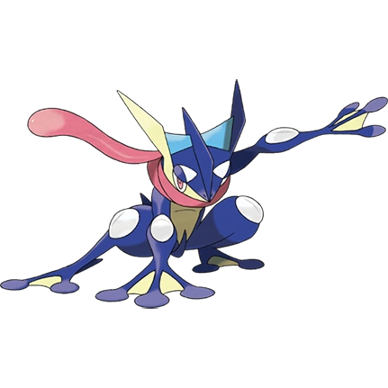

POKEDEX POKEMON
#658 Greninja

Mężczyzna Tworzy wyrzucanie gwiazd ze sprężonej wody. Kiedy kręci nimi i rzuca nimi z dużą prędkością, gwiazdy te mogą rozłupać metal na pół. Wysokość 4' 11" Waga 88,2 funta Kategoria Ninja Zdolności Potok Typ Wodny Mroczny Słabości Baśniowy Trawiasty Elektryczny Walczący Robaczy
Kobieta Pojawia się i znika z gracją ninja. Bawi się swoimi wrogami szybkimi ruchami, jednocześnie krojąc ich gwiazdami rzucanymi z najostrzejszej wody. Wersje: Wysokość 4' 11" Waga 88,2 funta Kategoria Ninja Zdolności Potok Typ Wodny Mroczny Słabości Baśniowy Trawiasty Elektryczny Walczący Robaczy